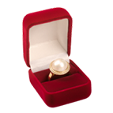
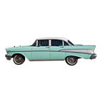
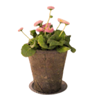

Un poco sobre mí
Mi nombre es Ana Luz Acuña y tengo 22 años. Desde chiquitita jugo a diseñar con photoshop y ahora es mi herramienta de trabajo diaria. Cuando no estoy trabajando disfruto de ver series de zombies y coserme ropa.

Perdidamente enamorada

Sueño con tener un autito y recorrer el país

Intento que mis plantas sobrevivan
Llegando al mundo
Fuí una bebita muy feliz, rodeada de amor y payasadas. Desde chiquita amo pintar, dibujar y charlar, solo que ahora lo hago de forma profesional

(Deslizá para ver mi línea del tiempo)
¿Querés que tu marca florezca?
Charlemos de tu proyecto y hagámoslo crecer ¡hasta florecer!
Enviar mensaje